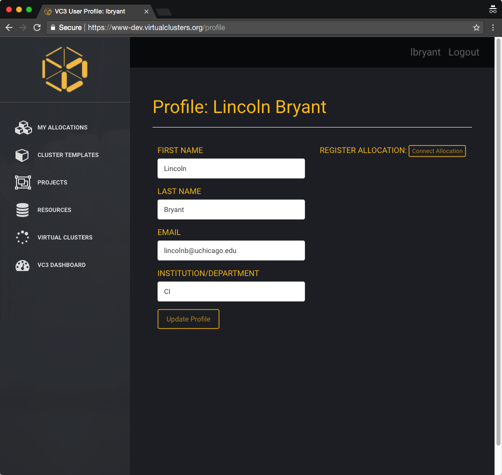

4. Complete or update your VC3 profile¶
Once you have signed in, you’ll be asked to update or complete your VC3 profile with information such as your Institution and any other information we cannot directly extract from your Globus account. Click “Update Profile” once done.
